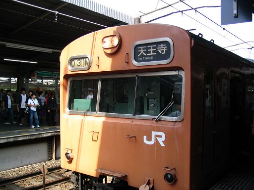
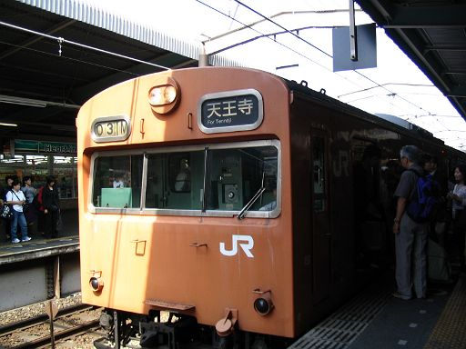

実はまだ鶴橋にいるまんまなんです。
もーなんでウチ、ロッテリアの前にこんな張り付いてんねやろ～
もーイヤになってきた～
もー光線の加減が変だしぃ恥ずかしいしぃ～帰ろうかな～
あ、あれ、これってあのオッサンたちがうるさいやつちゃうん！
と、撮るぞ、前に出るぞ、前だ前！えーい、パシャ

いやーん、数字がみえなーい。しかも寄りすぎて右下切れてるしぃぃ
よし、ちょっとひくぞ、こ、これぐらいの距離か？ いけ、パシャ！

いやーん、やっぱし光線がヘンでわかんないよー
よしゃ、横に回れ、横から撮れば写るはず。がんばれ、私、いや、何やってんだよわたし。えーい、パシャ！ よしゃ、動画もいったれ～１

いやーん、こんな写真撮っちゃったよー。左の兄ちゃんの視線が痛いよー
いやーん、動画もやっぱし影になってるぅぅ。 でも見てみて～ほら、103-1やで～！北京、これでどや！尼オタ、鉄分補給できたんちゃう？？
はーウチ何やってんねん。
だけど、だけど影になった写真ばっかしで悔しい。
環状線一周って５０分ぐらいだっけ。
ちゅーことは、光線の具合が良さげな別の駅に移動すれば一周回ってきたコイツを再度撮影できるのでは？
現在、土曜日のお昼時。そろそろ天満に帰りたいなあ。
そういや、行きしに、桜ノ宮駅ホームの大阪側端っこで鉄のヒトビトがカメラ構えてたなあ。
あっち側のホームからなら光線いい具合だろうなあ。帰り道だなあ、桜ノ宮。
京橋側の端っこなら、改札に近いぞ！ 「人待ちしてます」って感じで誤魔化せるかもしれない。。。
天満までの帰り道だし、桜ノ宮、行っちゃう？
-------- Ｙ夫のつっこみ --------
「ロッテリア前ベンチの写真が無いんか。まだまだよのう。」
「"一周してきた"103-1を撮影？ まだまだよのう。」
Y妻、己の失敗に気づかないまま次号に続く。。
都島